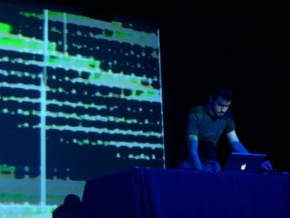

2005
december
NNY performs live at the Multimedia and Digital Arts Madeira Dig Festival with Pygar, @c, Hecker and Fennesz.
articles in portuguese about madeira dig here, here and here.


more pictures here.november
NNY was featured on dark bot radio show on wmbr 88.1 fm cambridge on 22nd of october. the show featured "1noise" and "artria" from the new album ECT and also featured music by autechre and boards of canada.october
"ECT' is a complex experiment in sound dissection, as Jerome pursues pure forms of sound composition, some being harsh and brute while others are harmonious and contemplating." - Pedro Leitão of Test Tube Records (read more here).
ECT interview (in portuguese) here.
ECT articles (in portuguese) here and here.
ECT review (in french) here.
september
you can download a video that features "artria" from the new record ECT that will be released by test tube records the twenty first of october two thousand and five.NNY was featured again on the marvin suicide show and the track played was "hell rendered" from (read.error). you can download the show here.
august
the new NNY album is done (as in mixed and mastered) and its called "ECT".the author describes it as "how music would sound if it never stopped playing after the ending."
it will be available in two formats: a regular edition released by test tube records and a special edition only available at the official nny website.
NNY - ECT
01. play
02. 1noise
03. spctiv
04. mem.
05. mcruscul
06. ngen
07. tekrish
08. sy.kic/pa.trn
09. artria
10. 1noise (ps.mix)total time: 70min
NNY - ECT (official website edition)
01. play
02. 1noise *
03. spctiv
04. mem.
05. mcruscul
06. ngen
07. tekrish
08. sy.kic/pa.trn
09. 0007-1 **
10. artria *
11. stop **
12. freq (combo.mix) **
13. 1noise (ps.mix) ** alternate version
** bonus tracktotal time: 90min


the record features guest musicians on some tracks as well as remixes by other artists.
in other news, NNY was featured on the marvin suicide show and the track played was "exmatik" from offear.ep. you can download the show here.
july
playing guitar with stratus @ santana 01_07_05
playing guitar with stratus @ porto moniz 07_07_05
playing synthesizers with blue sound traffic @ funchal 09_07_05 (cancelled due to power failure)
playing two tracks (1noise and exmatik) as NNY and interviewed @ RTPM 14_07_05
playing guitar with stratus @ kelts 15_07_05june
playing guitar with stratus @ kelts 09_06_05may
playing synthesizers with blue sound traffic @ jardim municipal funchal 27_05_05april
doing research @ HEL with eur_march
playing drums in hologram as opening act for the gift @ tecnopolo funchal.february
playing drums in extended along with karnak seti and dogma 4.1 @ rdp auditorium funchal.january
NNY_(read.error) released by mimi records.